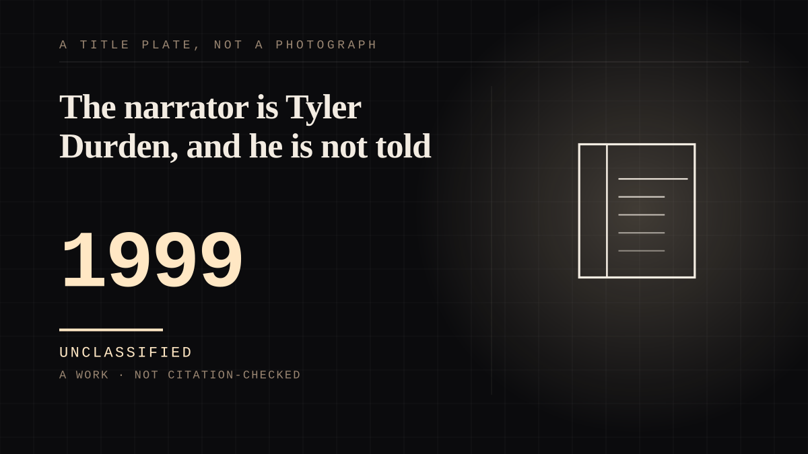

A work · 1999 · Cinema
The narrator is Tyler Durden, and he is not told
Two hours of a man telling you about his best friend. The friend does not exist, the man telling you does not know it, and you are being addressed by somebody who is also being lied to.

The sharper version of the mirrored case, and sharper than Dorian Gray because the split is not between an image and a man but **inside a single voice**. For the whole film the audience attaches to Tyler Durden, and Tyler Durden is supplied entirely by the person narrating: "The Narrator, an unreliable narrator, is not immediately aware that he is mentally projecting Tyler." There is no second person to check him against, which is the condition every other entry on this site has and this one has inverted. The physical evidence is better than the script notes, because the actor supplied it: Edward Norton said "We decided early on that I would start to starve myself as the film went on, while Brad Pitt would lift and go to tanning beds; he would become more and more idealized as I wasted away." One body, two figures, and the divergence was made physically rather than written. What ties it to `the-imaginary-friend` is the mechanism, which is the same mechanism in two epistemic states. An unreliable narrator is a person who knows and maintains anyway. A child with an imaginary companion knows the friend is invented. The Narrator does not know Tyler is invented. **One mechanism, two states of knowing, and the film conceals the difference on purpose** - the reveal is the last ten minutes, by which point the audience has been holding a bond for nearly two hours without knowing there was anything to hold on to. The commercial story is the same story told in money. Studio executives disliked the film and restructured Fincher's intended marketing campaign to cut expected losses; it opened to about $102.4 million and then found its actual audience in home video. The bond is with the narrator. The money followed the bond and ignored the premise.
Same story, 3 other entries
Entitled to the adulation of all lesser mortals1940 → The fan club1950 → The supermarket club1982
Where it sits
1950 1950-1999 · 1999 1999
Provenance · 1 source record(s)
- retrievableProduction and the load-bearing sentence: 'Fight Club is a 1999 American film directed by David Fincher starring Brad Pitt, Edward Norton, and Helena Bonham Carter. It is based on the 1996 novel Fight Club by Chuck Palahniuk.' 'It was filmed in and around Los Angeles from July to December 1998.' 'Studio executives did not like the film and restructured Fincher's intended marketing campaign to try to reduce anticipated losses.' Gross $102.4 million. Norton as 'the unnamed narrator, an insomniac automobile recall specialist dissatisfied with his consumerist lifestyle', Pitt as 'Tyler Durden, a charismatic soap salesman who forms Fight Club with the narrator'. And the mechanism: 'The Narrator, an unreliable narrator, is not immediately aware that he is mentally projecting Tyler. He also mistakenly promotes the fight clubs as a way to feel powerful, though the Narrator's physical condition worsens while Tyler Durden's appearance improves.' Norton on the production: 'We decided early on that I would start to starve myself as the film went on, while [Brad Pitt] would lift and go to tanning beds; he would become more and more idealized as I wasted away.'Fight Club. Wikipedia. ↗
Not yet stood behind. The entry is real. A person has not read the citation and confirmed it, so treat the date as approximate until they do.
CHARACTER The written character
Connected · 4 out, 3 in
Reported as a story
It sits in
The full timeline → · The database → · See it in the atlas →